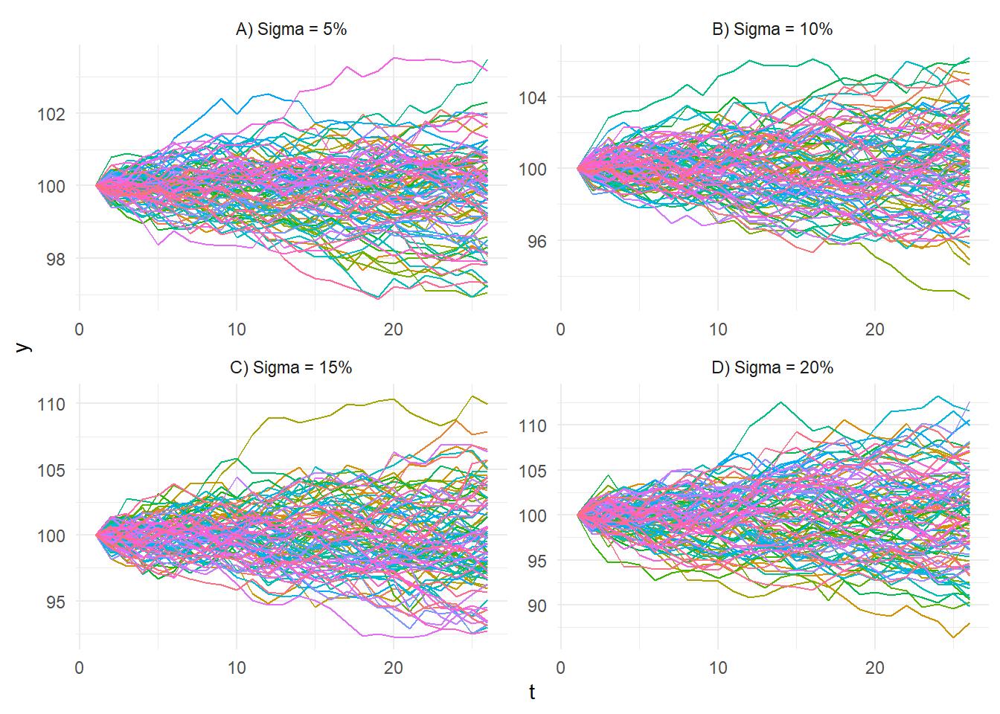

ts_geometric_brownian_motion(
.num_sims = 100,
.time = 25,
.mean = 0,
.sigma = 0.1,
.initial_value = 100,
.delta_time = 1/365,
.return_tibble = TRUE
)Introduction
Geometric Brownian motion (GBM) is a widely used model in financial analysis for modeling the behavior of stock prices. It is a stochastic process that describes the evolution of a stock price over time, assuming that the stock price follows a random walk with a drift term and a volatility term.
One of the advantages of GBM is that it can capture the randomness and volatility of stock prices, which is a key feature of financial markets. GBM can also be used to estimate the expected return and volatility of a stock, which are important inputs for financial decision making.
Another advantage of GBM is that it can be used to generate simulations of future stock prices. These simulations can be used to estimate the probability of different outcomes, such as the probability of a stock price reaching a certain level in the future. This can be useful for risk management and for evaluating investment strategies.
GBM is also very easy to implement, making it a popular choice among financial analysts and traders.
The equation for GBM is: \[ dS(t) = μS(t)dt + σS(t)dW(t) \] Where:
\(dS(t)\) is the change in the stock price at time \(t\)
\(S(t)\) is the stock price at time \(t\)
\(μ\) is the expected return of the stock
\(σ\) is the volatility of the stock
\(dW(t)\) is a Wiener process (a random variable that describes the rate of change of a random variable over time)
It’s important to keep in mind that GBM is a model and not always a perfect fit to real-world stock prices. However, it’s a widely accepted model due to its capability to captures the key characteristics of stock prices and its mathematical tractability.
Attention R users! Are you looking for a reliable and accurate way to model stock prices? We have some exciting news for you! The next release of the R package {healthyR.ts} will include a new function, ts_geometric_brownian_motion(). This powerful function utilizes the geometric Brownian motion model to simulate stock prices, providing you with valuable insights and predictions for your financial analysis.
Function
Let’s take a look at the full function call.
Now let’s go over the arguments to the parameters.
.num_sims- Total number of simulations..time- Total time of the simulation..mean- Expected return.sigma- Volatility.initial_value- Integer representing the initial value..delta_time- Time step size..return_tibbleThe default is TRUE. If set to FALSE then an object of class matrix will be returned.
Example
Let’s go over a few examples.
library(healthyR.ts)
ts_geometric_brownian_motion()# A tibble: 2,600 × 3
sim_number t y
<fct> <int> <dbl>
1 sim_number 1 1 100
2 sim_number 2 1 100
3 sim_number 3 1 100
4 sim_number 4 1 100
5 sim_number 5 1 100
6 sim_number 6 1 100
7 sim_number 7 1 100
8 sim_number 8 1 100
9 sim_number 9 1 100
10 sim_number 10 1 100
# … with 2,590 more rowsNow without returning a tibble object.
ts_geometric_brownian_motion(.num_sims = 5, .return_tibble = FALSE) sim_number 1 sim_number 2 sim_number 3 sim_number 4 sim_number 5
[1,] 100.00000 100.0000 100.00000 100.00000 100.0000
[2,] 101.04170 100.6583 100.46420 99.68513 100.3776
[3,] 101.58155 100.8959 100.03621 98.91656 101.5732
[4,] 100.91680 100.7494 99.47735 98.57117 101.1525
[5,] 99.96787 101.3298 98.70899 99.03101 101.1557
[6,] 99.29069 101.4187 98.32176 98.33018 101.5584
[7,] 99.40451 101.5124 98.26237 97.79356 101.4934
[8,] 99.35345 101.0328 98.69587 97.46604 101.9630
[9,] 97.94177 100.9534 98.32630 96.95231 102.1643
[10,] 97.95812 101.3813 98.36934 96.64048 101.8546
[11,] 98.47820 101.8262 98.21492 96.12851 102.5529
[12,] 99.53016 102.5522 97.92270 95.97443 102.8912
[13,] 98.82850 102.7482 96.66348 96.26008 103.1899
[14,] 99.87335 102.9351 96.69635 96.15058 103.9259
[15,] 101.03605 103.3796 96.60162 96.63562 103.3790
[16,] 101.83475 103.1900 97.63875 96.00162 103.0422
[17,] 102.10155 103.5851 97.12873 95.99579 103.0913
[18,] 102.16085 103.2966 96.26772 95.95174 103.7034
[19,] 102.35736 103.7429 96.37355 96.02805 102.8406
[20,] 102.49297 104.5301 96.44318 96.28293 103.3507
[21,] 102.36953 105.1809 96.87639 97.32625 104.0307
[22,] 103.30672 104.7480 96.90017 97.16507 104.0751
[23,] 103.55433 104.9848 97.40063 97.49375 102.6901
[24,] 103.44429 104.3553 97.35982 97.39390 102.8163
[25,] 103.23952 102.9840 97.30287 97.66737 103.2160
[26,] 103.48365 103.6117 97.96290 97.91773 103.0579
attr(,".time")
[1] 25
attr(,".num_sims")
[1] 5
attr(,".mean")
[1] 0
attr(,".sigma")
[1] 0.1
attr(,".initial_value")
[1] 100
attr(,".delta_time")
[1] 0.002739726
attr(,".return_tibble")
[1] FALSELet’s visualize the GBM at different levels of volatility.
library(dplyr)
library(ggplot2)
gbm <- rbind(
ts_geometric_brownian_motion(.sigma = 0.05) %>%
mutate(volatility = as.factor("A) Sigma = 5%")),
ts_geometric_brownian_motion(.sigma = 0.1) %>%
mutate(volatility = as.factor("B) Sigma = 10%")),
ts_geometric_brownian_motion(.sigma = .15) %>%
mutate(volatility = as.factor("C) Sigma = 15%")),
ts_geometric_brownian_motion(.sigma = .2) %>%
mutate(volatility = as.factor("D) Sigma = 20%"))
)
gbm %>%
ggplot(aes(x = t, y = y, group = sim_number, color = sim_number)) +
facet_wrap(~ volatility, scales = "free") +
geom_line() +
theme_minimal() +
theme(legend.position = "none")
Voila!